Изучаем DelphiX (Часть 1)
Изучаем DelphiX
Взято с: http://www.gamedev.ru/
Часть 0: «Теория».
«Теория, теория ну а практика,
а практика потом» —
Так подумал автор, начиная
писать эту статью.
Ну что же, приступим:
1. Обзор DelphiX.
DelphiX — это набор компонентов, способный облегчить использование DirectX в Delphi приложениях и использовать всю мощь DirectX.
Основные компоненты DelphiX:
TDXDraw — (Это такой мониторчик) Дает доступ к поверхностям DirectDraw (проще говоря, эта вещь которая отображает всё) Проще говоря, сам DirectDraw.
TDXDib - Позволяет хранить DIB (Device Independent Bitmap)
TDXImageList — Позволяет хранить серии DIB, Jpg, bmp-файлов, что очень удобно для программ, содержащих спрайты. Позволяет загружать DIB`ы с диска во время выполнения программы.
TDXSound — Проигрыватель звуков в формате Wav.
TDXWave — «Контейнер» для wav-файла.
TDXWaveList — Позволяет хранить серии для wav-файлов.
TDXInput — Позволяет использовать DirectInput, т.е. получить доступ к устройствам ввода информации (мышь, клавиатура, джойстик).
TDXPlay — Компонент позволяющий обмениваться информацией на компьютерах.
TDXSpriteEngine — Спрайтовый движок.
TDXTimer — Более точный, чем TTimer.
TDXPaintBox — Альтернатива TImage, только DIB-версия.
В DelphiX есть самостоятельные компоненты, а есть вспомогательные, вот, например, DXSpriteEngine не может без DXDraw (где он будет отображать всё действия происходящие на сцене). Вот таблица зависимых и вспомогательных:
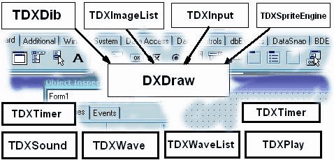
2. Принцип написания кода и основные процедуры для классов.
Весь принцип очень прост и удобен, сейчас объясню: весь код строится по классам, в каждом классе свои процедуры, каждый новый тип юнита это новый класс и в каждом классе свои процедуры. Рассмотрим на живом примере: возьмём камень и бумагу. Бумага мнётся, камень нет. Так и здесь, в одном классе это свойство есть, в другом нет, рассмотрим кусок кода отвечающий за класс:
TPlayerFa = class(TImageSprite)
protected
procedure DoCollision(Sprite: TSprite; var Done: Boolean); override;
procedure DoMove(MoveCount: Integer); override;
public
constructor Create(AParent: TSprite); override;
destructor Destroy; override;
end;
Здесь нам виден класс TplayerFa, его процедуры:
procedure DoCollision(Sprite: TSprite; var Done: Boolean); override;
— Это процедура столкновения, что будет происходить при столкновении
procedure DoMove(MoveCount: Integer); override;
— Это процедура движения, в ней указывается, как класс будет двигаться.
( в следующих частях я опишу и расскажу про все функции и их использование на практике)
constructor Create(AParent: TSprite); override;
— Это конструктор Create очень полезная вещь он отвечает за происходящим во время создания объекта.
destructor Destroy; override;
— Альтернатива, только при уничтожении объекта.
После написания класса каждая процедура расписывается, и всё, можно писать сам код.
(Но это мы будем делать позже.)
Часть 1: Первая игра.
«Как много игр то хороших,Да только сегодня не до них»
Теперь мы создадим первую, и надеюсь не последнюю игрушку, смысл у нас будет такой: Мы - маленький космический корабль, нам надо уничтожить большой статичный космический корабль (прим. автора: "Этот пример научит мыслить по DelphiX`ски").
Итак, запускаем Delphi (Для тех, кто в танке, у кого 6-ая, ищите на этом же сайте статью "DelphiX для Delphi6"). Вы, надеюсь, предварительно установили DelphiX, тогда ищем в панели с компонентами раздел DelphiX:
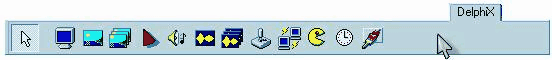
Кидаем на форму следующие компоненты:
DXDraw — и проставляем в нем следующие опции в Object Inspector:
Align = alClient - это нужно для того чтобы DXDraw «обтянул» всю форму.
Display = 800x600x16 - почему, спросите вы, не 800x600x24? Да потому что не все видеокарты поддерживают 24 битный режим.
Options-doFullScreen = True, если хочешь чтобы твоя игра была на весь экран, и ещё надо в свойствах формы поставить: BorderStyle = bsnone.
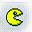TDXSpriteEngine — Сам движок для работы со спрайтами. В нём нужно только выбрать в поле DXDraw сам DXDraw1.
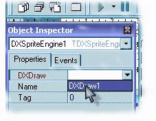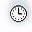TDXTimer — Он вообще-то и нужен, чтобы обновлять кадры, но он нам пригодится и для другого. Свойства следующие:
Active Only = False - По-русски: "Быть активным всегда". Смысл: Работает даже если вы, работаете с другим приложением.
Interval = 0 - Частота повторения цикла, должна быть равна 0.
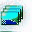TDXImageList — В этом листе будут у нас хранится все спрайты. Свойства:
DXDraw = DXDraw1
После кликаем на Items: (TPictureCollection), появляется окно Editing DxImagelist1.Items. В нём кликаем по Add New и в Object Inspector в поле "Name" пишем название спрайта, назовем его "pla" - это будет сам игрок, загружаем его с помощью Picture... Игрок у меня будет вот такой:
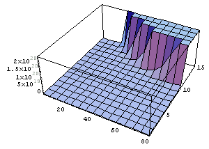Только фон чёрный - для прозрачности. Устанавливаю в Object Inspector у данной картинки свойства Transparent = true и TransparentColor = clBlack.
Создаём ещё один спрайт под именем Pula проделываем тоже самое с ним, только TransparentColor = clWhite. Выглядит пуля вот так:
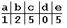И последнее что нам осталось, добавить этого босса, называем его "BOSS", вот он:
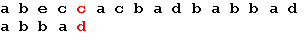TransparentColor = clWhite. На этом с DXImageList мы пока закончили.
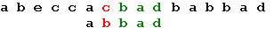TDXInput — Ну, а этот компонент будет отвечать за нажатые клавиши на клавиатуре. В нем никакие изменения делать не будем, только рассмотрим его (на будущее). Кликнем 2 раза по компоненту, и появится TDXInput Editor, выглядит он вот так:
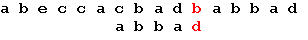Первая закладка устанавливает свойства джойстика, вторая клавиатуры. Вот закладка со свойствами клавиатуры нам и нужна. Вот так она выглядит:
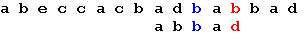Слева - условное название клавиш, а справа - их значение. Каждому условному названию может быть присвоено 3 клавиши. Всего условных названий 36 штук.
Ну что, теперь приступаем к написанию кода. Вначале нужно изменить класс формы на TDXForm вот пример:
До:
//...
type
TForm1 = class(TForm)
DXDraw1: TDXDraw;
DXImageList1: TDXImageList;
DXInput1: TDXInput;
//...
После:
//...
type
TForm1 = class(TDXForm)
DXDraw1: TDXDraw;
DXImageList1: TDXImageList;
DXInput1: TDXInput
//...
Дальше расписываем классы после implementation.
Вот так:
{$R *.DFM}
type
TPlayerSprite = class(TImageSprite) //Класс игрока
protected
procedure DoMove(MoveCount: Integer); override; // Движение
end;
TBoSS = class(TImageSprite) // Класс босса
Protected
// Столкновение
procedure DoCollision(Sprite: TSprite; var Done: Boolean); override;
procedure DoMove(MoveCount: Integer); override;
public
constructor Create(AParent: TSprite); override; //при создании
destructor Destroy; override; // при смерти
end;
TPlayerFa = class(TImageSprite)
protected
procedure DoCollision(Sprite: TSprite; var Done: Boolean); override;
procedure DoMove(MoveCount: Integer); override;
public
constructor Create(AParent: TSprite); override;
destructor Destroy; override;
end;
Далее расписываем каждую процедуру для каждого класса. Вот образец:
Procedure TPlayerFa.DoMove(MoveCount: Integer); Begin inherited DoMove(MoveCount); end; constructor TPlayerFa.Create(AParent: TSprite); begin end; destructor TPlayerFa.Destroy; begin inherited Destroy; // Обязательно end; procedure TPlayerFa.DoCollision(Sprite: TSprite; var Done: Boolean); begin end;
Это нужно проделать с каждым классом, который содержит свои процедуры, указанные в классе.
Далее выбираем компонент DXTimer который уже на форме и в Object Inspector в закладке Events, находим пункт OnTimer. Два раза кликаем по пункту, создаётся процедура DXTimer1Timer, в ней пишем следующие строчки:
if not DXDraw1.CanDraw then exit; // Если нет DirectX выходим DXInput1.Update; DXSpriteEngine1.Move(LagCount); DXSpriteEngine1.Dead; DXDraw1.Surface.Fill(0); DXSpriteEngine1.Draw; DXDraw1.Flip;
Далее:
Кликая на форму в свободное место и Object Inspector в закладке Events, находим OnCreate. Создаём процедуру и пишем в ней:
with TBOSS.Create(Dxspriteengine1.Engine) do
begin
PixelCheck := True; // для столкновения просчитывает каждую точку
Image := form1.dxImageList1.Items.Find('BOSS'); //ищем спрайт в ImageList`е
x:=350; // x координаты
y:=10; // y координаты
Width := Image.Width; //ширина равна ширине спрайта
Height := Image.Height; //высота равна высоте спрайта
end;
with TPlayerSprite.Create(Dxspriteengine1.Engine) do
begin
PixelCheck := True;
Image := form1.dxImageList1.Items.Find('Pla');
x:=350;
y:=500;
Width := Image.Width;
Height := Image.Height;
end;
Сейчас объясню, зачем это всё. При создании формы мы создаём все статичные объекты сразу. Ну, что? Теперь можно перейти к процедурам и их заполнению :) Начнём с процедур босса. Они самые простые. Пред implementation в var добавить переменную
i:boolean; //переменная движения в сторону BOSSA
и в свойствах формы OnCreate добавить:
I:=true;
Только после этого пишем следующее:
Procedure TBoSS.DoMove(MoveCount: Integer);
begin
inherited DoMove(MoveCount);
if x>= 700 then I:= true; // когда X>= то туда >>>
if x<= 0 then I:= false; // когда X<= то туда <<<
if i= true then X := X+10;
if i= false then X := X-10;
Collision;
end;
constructor TBOSS.Create(AParent: TSprite); //Здесь всё понятно
begin
inherited Create(AParent);
Image := form1.DXImageList1.Items.Find('BOSS');
Width := Image.Width;
Height := Image.Height;
end;
destructor TBOSS.Destroy; //тут тоже
begin
inherited Destroy;
end;
procedure TBoss.DoCollision(Sprite: TSprite; var Done: Boolean);
begin
// если спрайт сталкивается с Tplayerfa, то умирает
if Sprite is Tplayerfa then dead;
Collision; // Включаем столкновение
end;
Ну, вроде, с одним объектом разобрались, переходим к игроку, тут одна процедура
Procedure TPlayerSprite.DoMove(MoveCount: Integer);
begin
inherited DoMove(MoveCount);
// при нажатии двигаем объект влево
if isLeft in Form1.DXInput1.States then x:=x-5;
// при нажатии двигаем объект вправо
if isRight in Form1.DXInput1.States then x:=x+5;
// при нажатие вверх создаётся наша пулька
if isup in Form1.DXInput1.States then
begin
with TPlayerFa.Create(Engine) do
begin
PixelCheck := True;
Image := form1.dxImageList1.Items.Find('Pula');
//Чтобы пуля создавалась около нашего объекта
X := Self.X+Self.Width -40;
//Чтобы пуля создавалась около нашего объекта
Y := Self.Y+Self.Height -80;
Width := Image.Width;
Height := Image.Height;
end;
end;
if y >= form1.DXDraw1.SurfaceHeight-image.Height then //не пускаем
y := form1.DXDraw1.SurfaceHeight-image.Height; //объект
if x >= form1.DXDraw1.SurfaceWidth -image.Width then //за границы
x := form1.DXDraw1.SurfaceWidth -image.Width; //формы
if y <= 0 then
y := 1;
if x <= 0 then
x:=1;
end;
И, наконец, последнее, это сама пуля и её процедуры:
Procedure TPlayerFa.DoMove(MoveCount: Integer);
begin
inherited DoMove(MoveCount);
y:=y-3; //проще некуда, неправда ли?
end;
procedure TPlayerFa.DoCollision(Sprite: TSprite; var Done: Boolean);
begin
if Sprite is TBoss then dead;
Collision;
end;
И на последок, для удобства в Object Inspector в закладке Events находим OnKeyDown, кликаем и пишем:
if Key=VK_ESCAPE then application.Terminate;
При вставке этого кода по нажатию клавиши ESC выходим из приложения.
Вот и всё! Это одно из самых примитивных игр на DelphiX, но ты её сам сделал.
Вот вам Д/З для улучшения знаний:
1. Сделайте так, чтобы при уходе патрона из зоны видимости он уничтожался
2. Сделайте, чтобы патроны стреляли очередями, а не кучами как у меня